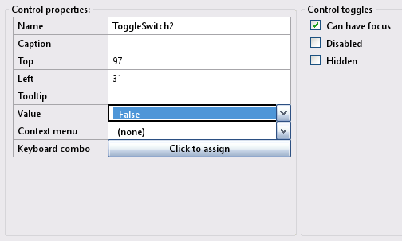
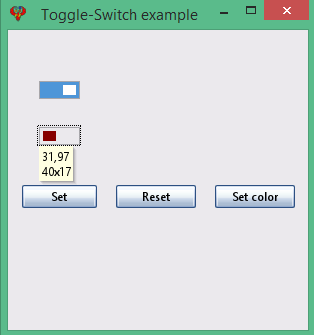

Toolbox Toggle-Switch
In an InForm application, a Toggle switch control is ideal for settings that have an immediate effect or result. This page provides more detailed information about Toggle switch controls.
Toggle-Switch control
Create a new Toggle-Switch control by clicking the Toggle-Switch icon in the Toolbox. The newly created control will be displayed in the preview window; allowing you to move it around to meet your design requirements. Edit the Toggle-Switch properties as necessary.
13) Toggle-Switch Properties:
Toggle-Switch examples: Preview window.
Note: Toggle-Switch properties will reflect the highlighted control selected in the preview window, enabling you to customize it as needed.
A Toggle switch control is ideal for settings that have an immediate effect or result, for example, a light switch.
Run time:Read a Toggle switch control's current state with the .Value property (returns True or False):
state%% = Control(myToggleControlID).Value
Set a Toggle switch control's state with the .Value property. (values are True or False):
Control(myToggleControlID).Value = True or False
Toggle-Switch examples- refer to the above image
Specification: Let the Toggle-Switch examples have the following design specification:
- Add two Toggle-Switches. Set swith 2 to have a yellow back ground.
- Add three buttons with the captions Set, Reset, and Set color.
- The Set button sets both toggle switches to a true state.
- The reset button sets both toggle switches to a false state.
- The Set color button. Changes Both toggle switches selected state to have a red background with a blue foreground.
Implimenation: The following provide solutions for the above:
- Button click: use the subroutine __UI_Click.
- Set button: use Control(myToggleControlID).Value = True for both toggle switches
- Reset button use Control(myToggleControlID).Value = False for both toggle switches
- Color button: use the following to change
- Control(ControlID).SelectedForeColor = _RGB32(Red%, Green%, Blue%)
- Control(ControlID).SelectedBackColor = _RGB32(Red%, Green%, Blue%)
- Note: Force a redraw using Control(myControlID).Redraw = True
- For additional details, check out the file ToggleSwithExample.bas
- At the layout stage, save the project using File -> Save project as and enter the name ToggleSwithExample.
Basic file ToggleSwithExample.bas
': This program uses
': InForm - GUI library for QB64 - v1.5
': Fellippe Heitor, 2016-2024 - fellippe@qb64.org - @fellippeheitor
': https://github.com/FellippeHeitor/InForm
'-----------------------------------------------------------
': Controls' IDs: ------------------------------------------------------------------
Dim Shared Form1 As Long
Dim Shared ToggleSwitch1 As Long
Dim Shared ToggleSwitch2 As Long
Dim Shared setBtn As Long
Dim Shared resetBtn As Long
Dim Shared colorBtn As Long
': External modules: ---------------------------------------------------------------
'$INCLUDE:'InForm\InForm.bi'
'$INCLUDE:'InForm\xp.uitheme'
'$INCLUDE:'ToggleSwithExample.frm'
': Event procedures: ---------------------------------------------------------------
Sub __UI_BeforeInit
End Sub
Sub __UI_OnLoad
End Sub
Sub __UI_BeforeUpdateDisplay
'This event occurs at approximately 60 frames per second.
'You can change the update frequency by calling SetFrameRate DesiredRate%
End Sub
Sub __UI_BeforeUnload
'If you set __UI_UnloadSignal = False here you can
'cancel the user's request to close.
End Sub
Sub __UI_Click (id As Long)
Select Case id
Case Form1
Case ToggleSwitch1
Case ToggleSwitch2
Case setBtn
Control(ToggleSwitch1).Value = TRUE ' <---
Control(ToggleSwitch2).Value = TRUE ' <---
Case resetBtn
Control(ToggleSwitch1).Value = FALSE ' <---
Control(ToggleSwitch2).Value = FALSE ' <---
Case colorBtn
Control(ToggleSwitch1).SelectedForeColor = _RGB32(0, 0, 255) ' <---
Control(ToggleSwitch1).SelectedBackColor = _RGB32(255, 0, 0) ' <---
Control(ToggleSwitch2).SelectedForeColor = _RGB32(0, 0, 255) ' <---
Control(ToggleSwitch2).SelectedBackColor = _RGB32(255, 0, 0) ' <---
'Force a redraw
Control(ToggleSwitch1).Redraw = TRUE ' <---
Control(ToggleSwitch2).Redraw = TRUE ' <---
End Select
End Sub
Sub __UI_MouseEnter (id As Long)
Select Case id
Case Form1
Case ToggleSwitch1
Case ToggleSwitch2
Case setBtn
Case resetBtn
Case colorBtn
End Select
End Sub
Sub __UI_MouseLeave (id As Long)
Select Case id
Case Form1
Case ToggleSwitch1
Case ToggleSwitch2
Case setBtn
Case resetBtn
Case colorBtn
End Select
End Sub
Sub __UI_FocusIn (id As Long)
Select Case id
Case ToggleSwitch1
Case ToggleSwitch2
Case setBtn
Case resetBtn
Case colorBtn
End Select
End Sub
Sub __UI_FocusOut (id As Long)
'This event occurs right before a control loses focus.
'To prevent a control from losing focus, set __UI_KeepFocus = True below.
Select Case id
Case ToggleSwitch1
Case ToggleSwitch2
Case setBtn
Case resetBtn
Case colorBtn
End Select
End Sub
Sub __UI_MouseDown (id As Long)
Select Case id
Case Form1
Case ToggleSwitch1
Case ToggleSwitch2
Case setBtn
Case resetBtn
Case colorBtn
End Select
End Sub
Sub __UI_MouseUp (id As Long)
Select Case id
Case Form1
Case ToggleSwitch1
Case ToggleSwitch2
Case setBtn
Case resetBtn
Case colorBtn
End Select
End Sub
Sub __UI_KeyPress (id As Long)
'When this event is fired, __UI_KeyHit will contain the code of the key hit.
'You can change it and even cancel it by making it = 0
Select Case id
Case ToggleSwitch1
Case ToggleSwitch2
Case setBtn
Case resetBtn
Case colorBtn
End Select
End Sub
Sub __UI_TextChanged (id As Long)
Select Case id
End Select
End Sub
Sub __UI_ValueChanged (id As Long)
Select Case id
Case ToggleSwitch1
Case ToggleSwitch2
End Select
End Sub
Sub __UI_FormResized
End Sub
'$INCLUDE:'InForm/InForm.ui'
Form file ToggleSwithExample.frm
': This form was generated by
': InForm - GUI library for QB64 - v1.5
': Fellippe Heitor, 2016-2024 - fellippe@qb64.org - @fellippeheitor
': https://github.com/FellippeHeitor/InForm
'-----------------------------------------------------------
SUB __UI_LoadForm
DIM __UI_NewID AS LONG, __UI_RegisterResult AS LONG
__UI_NewID = __UI_NewControl(__UI_Type_Form, "Form1", 300, 300, 0, 0, 0)
__UI_RegisterResult = 0
SetCaption __UI_NewID, "Toggle-Switch example"
Control(__UI_NewID).Font = SetFont("segoeui.ttf", 12)
Control(__UI_NewID).HasBorder = False
__UI_NewID = __UI_NewControl(__UI_Type_ToggleSwitch, "ToggleSwitch1", 40, 17, 31, 51, 0)
__UI_RegisterResult = 0
Control(__UI_NewID).HasBorder = False
Control(__UI_NewID).Value = -1
Control(__UI_NewID).CanHaveFocus = True
__UI_NewID = __UI_NewControl(__UI_Type_ToggleSwitch, "ToggleSwitch2", 40, 17, 31, 97, 0)
__UI_RegisterResult = 0
Control(__UI_NewID).ForeColor = _RGB32(134, 0, 0)
Control(__UI_NewID).SelectedForeColor = _RGB32(163, 223, 228)
Control(__UI_NewID).SelectedBackColor = _RGB32(255, 255, 0)
Control(__UI_NewID).HasBorder = False
Control(__UI_NewID).CanHaveFocus = True
__UI_NewID = __UI_NewControl(__UI_Type_Button, "setBtn", 75, 23, 14, 155, 0)
__UI_RegisterResult = 0
SetCaption __UI_NewID, "Set"
Control(__UI_NewID).HasBorder = False
Control(__UI_NewID).CanHaveFocus = True
__UI_NewID = __UI_NewControl(__UI_Type_Button, "resetBtn", 80, 23, 108, 155, 0)
__UI_RegisterResult = 0
SetCaption __UI_NewID, "Reset"
Control(__UI_NewID).HasBorder = False
Control(__UI_NewID).CanHaveFocus = True
__UI_NewID = __UI_NewControl(__UI_Type_Button, "colorBtn", 80, 23, 207, 155, 0)
__UI_RegisterResult = 0
SetCaption __UI_NewID, "Set color"
Control(__UI_NewID).HasBorder = False
Control(__UI_NewID).CanHaveFocus = True
END SUB
SUB __UI_AssignIDs
Form1 = __UI_GetID("Form1")
ToggleSwitch1 = __UI_GetID("ToggleSwitch1")
ToggleSwitch2 = __UI_GetID("ToggleSwitch2")
setBtn = __UI_GetID("setBtn")
resetBtn = __UI_GetID("resetBtn")
colorBtn = __UI_GetID("colorBtn")
END SUB